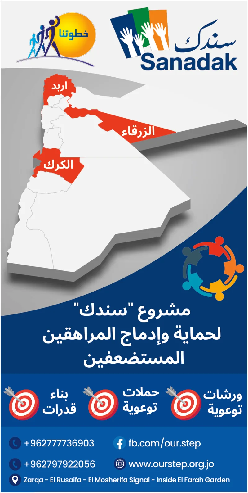
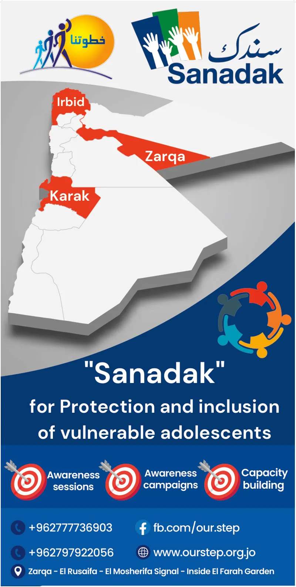
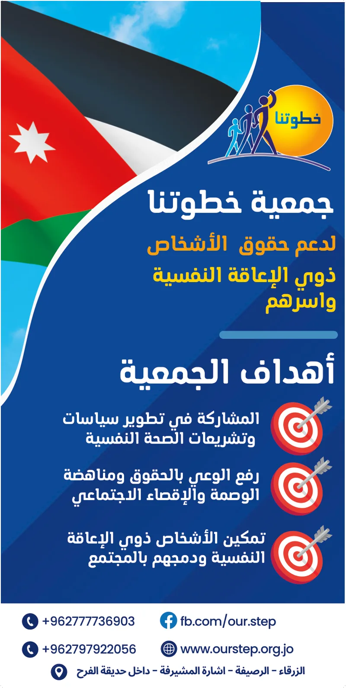
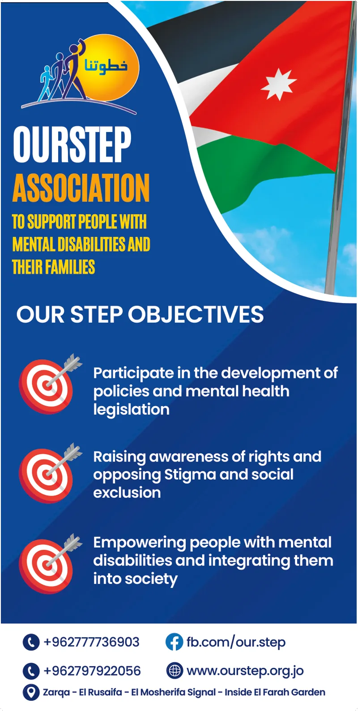
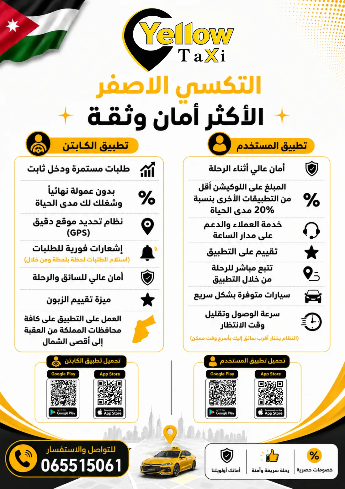
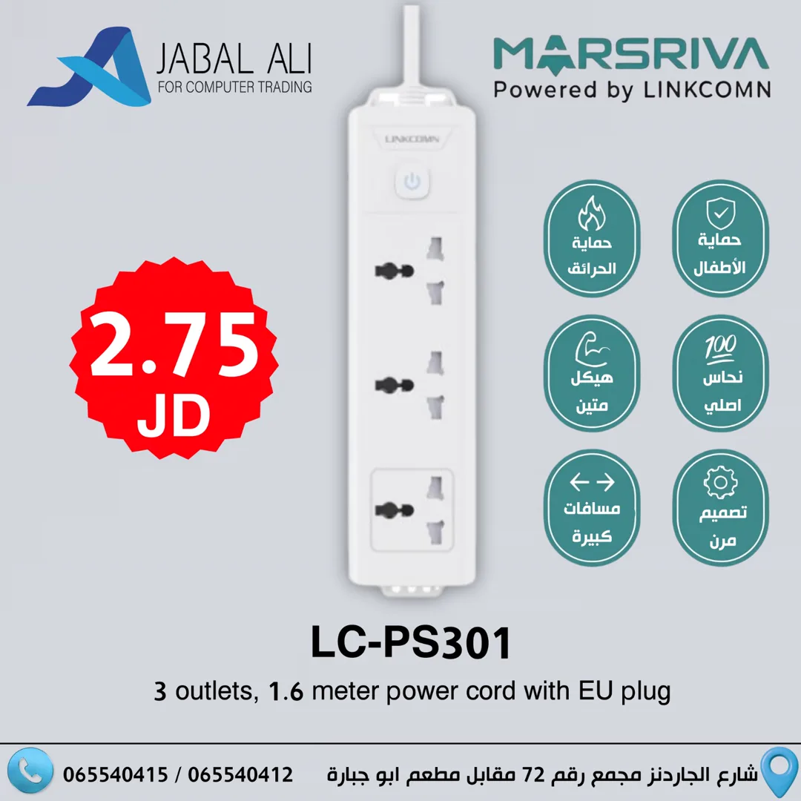

4:06
Project report, Ma'anتقرير المشروع في معان
FSSP · Our StepFSSP · خطوتنا
I'm a graphic designer and photographer in Amman. I make awareness campaigns, roll-ups and brochures for Our Step Association, product ads for Jabal Ali Computer Trading, and I shoot and edit the video myself.مصمم جرافيك ومصوّر في عمّان. أصمم حملات التوعية والرول أب والبروشورات لـجمعية خطوتنا، وإعلانات المنتجات لـشركة جبل علي لتجارة لوازم الكمبيوتر، وأصوّر الفيديو وأمنتجه بنفسي.
Our Step supports people with mental disabilities and their families. I've worked with them since 2017 on media, photography, video and design, for projects funded by the European Union, USAID and UNDP. These are from their mental health work with FSSP in Ma'an, in partnership with Canada.تدعم جمعية خطوتنا الأشخاص ذوي الإعاقة النفسية وأسرهم. أعمل معهم منذ 2017 في الإعلام والتصوير والفيديو والتصميم، لمشاريع بتمويل من الاتحاد الأوروبي وUSAID وUNDP. هذه الأعمال من مشروعهم للصحة النفسية مع FSSP في معان، بالشراكة مع كندا.
FSSP · Our StepFSSP · خطوتنا
Reel · Our Stepريل · خطوتنا
Reel · Our Stepريل · خطوتنا
Bilingual roll-ups for Our Step and the Sanadak project, a program for the protection and inclusion of vulnerable adolescents in Irbid, Zarqa and Karak.رول أب بلغتين لجمعية خطوتنا ولمشروع سندك، وهو برنامج لحماية وإدماج المراهقين المستضعفين في إربد والزرقاء والكرك.




Tri-fold brochures on depression and social anxiety for Our Step's awareness sessions. Hover to fold, click to read. Next to them, an app poster for Yellow Taxi.بروشورات ثلاثية الطي عن الاكتئاب والقلق الاجتماعي لجلسات التوعية في جمعية خطوتنا. مرّر المؤشر لطيّها، واضغط للقراءة. وبجانبها ملصق تطبيق التكسي الأصفر.

Product ads for a computer supplies company in Amman, the official ZKTeco agent in Jordan. I designed the posts and sold through their social media: attendance devices, point-of-sale systems, cameras and accessories, each with the price and the specs a buyer needs.إعلانات منتجات لشركة لوازم كمبيوتر في عمّان، الوكيل الرسمي لـ ZKTeco في الأردن. صممت المنشورات وبعت عبر صفحاتهم على السوشال ميديا: أجهزة الحضور والانصراف، وأنظمة نقاط البيع، والكاميرات والإكسسوارات، مع السعر والمواصفات التي يحتاجها المشتري.

Graphic designer and photographer since 2017, for a nonprofit, a computer supplies company and a taxi app. I shoot the photos and video, edit them, and design the print and social media around them.مصمم جرافيك ومصوّر منذ 2017، لجمعية أهلية وشركة لوازم كمبيوتر وتطبيق تكسي. أصوّر الصور والفيديو، وأمنتجها، وأصمم المطبوعات ومنشورات السوشال ميديا حولها.
Open to full-time roles and freelance projects in Amman or remote. WhatsApp is the fastest way to reach me.متاح لوظائف بدوام كامل ولمشاريع حرة، في عمّان أو عن بُعد. واتساب هو الأسرع للتواصل معي.